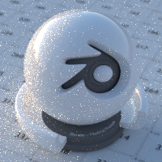

世界¶

Lighting with an HDR image.
世界环境可以提供光照，可以是单一色彩、或是天空模型，也可以是各种贴图。
Surface¶
表面着色器定义了从环境照射到场景中的光照。环境表面的渲染似乎是在场景内容十分遥远的地方，而且这意味着在场景物体与环境背景之间不会产生双向作用，只是光照可以进入而已。唯一支持的着色器就是具有输入接口的Background（背景）结点，以及决定光线密度的强度因数。
基于图像照明¶
For image based lighting, use the Environment Texture node rather than the Image Texture node for correct mapping. This supports Equirectangular (also known as Lat/Long) for environment maps, and Mirror Ball mapping for converting photos of mirror balls to environment maps.
Volume¶
体着色器可以在整个世界中应用，它会填满整个空间。
Currently this is most useful for night time or other dark scenes, as the world surface shader or sun lamps will have no effect if a volume shader is used. This is because the world background is assumed to be infinitely far away, which is accurate enough for the sun for example. However, for modeling effects such as fog or atmospheric scattering, it is not a good assumption that the volume fills the entire space, as most of the distance between the sun and the earth is empty space. For such effects it is be better to create a volume object surrounding the scene. The size of this object will determine how much light is scattered or absorbed.
环境光遮蔽¶
Ambient occlusion（以下简称"AO"）是一种照明方式，表示的是某表面上点被周围表面所遮蔽的程度，这并不是一种物理精确的手段，但却有助于突出表面的阴影效果，或者是作为作为生成一种类似于间接照明的快捷方法。
- 因数
- 此值为AO的强度，值为1.0时，代表是个全白的世界着色器。
- 距离
- Distance from shading point to trace rays. A shorter distance emphasizes nearby features, while longer distances make it also take objects farther away into account.
AO照明方式仅适用于漫反射类BSDF、光泽或透射类BSDF将不受影响。表明的透明度将会一并计算，例如，一个透明度减半的表面，其遮蔽效果强度将会相应减半。
An alternative method of using Ambient Occlusion on a per-shader basis is to use the Ambient Occlusion shader.
Mist Pass¶
Shown when the Mist pass is enabled. Mist values will range from 0.0-1.0 and are available from the RenderLayers node.
- Start
- Defines the beginning of the mist range from the camera.
- Depth
- Defines the length over which mist values will be provided.
- Falloff
The curve function that determines the mist values within its depth.
- Quadratic
- Uses the same calculation as light falloff (\(1\over{x^2}\)) and provides the smoothest transition from transparent (0.0) to opaque (1.0).
- Linear
- Has a steeper start than quadratic (\(1\over{x}\)).
- Inverse Quadratic
- Has the steepest start (\(1\over{\sqrt{x}}\)) and approaches 1.0 faster than the other two functions.
Tip
A visualization can be activated in the panel.
Settings¶
Surface¶
- 多重重要性采样
Enabling this will sample the background texture such that lighter parts are favored, creating an importance map. It will producing less noise in the render in trade of artifacts (fireflies). It is almost always a good idea to enable this when using an image texture to light the scene, otherwise noise can take a very long time to converge.
Below is a comparison between Multiple Importance Sample off and on. Both images are rendered for 25 seconds (Off: 1500 samples, On: 1000 samples).
Multiple Importance Sample Off.

Multiple Importance Sample On.
- 贴图精度
- Sets the resolution of the importance map. A higher resolution will better detect small features in the map and give more accurate sampling. but conversely will take up more memory and render slightly slower. Higher values also may produce less noise when using high-res images.
- Max Bounces
- Maximal number of bounces the background light will contribute to the render.
See also
See Reducing Noise for more information on how to reduce noise.
Volume¶
- Sampling Method
- 距离
- If you have got a pretty dense volume that is lit from far away then Distance sampling is usually more efficient.
- Equiangular
- If you have got a light inside or near the volume then equiangular sampling is better.
- Multiple Importance
- If you have a combination of both, then the multiple importance sampling will be better.
- Interpolation
Interpolation method to use for the volume.
- Linear
- Good smoothness and speed.
- Cubic
- Smoothed high quality interpolation, but slower.
- Homogeneous Volume
- Assume volume has the same density everywhere (not using any textures), for faster rendering. For example absorption in a glass object would typically not have any textures, and by knowing this we can avoid taking small steps to sample the volume shader.
射线可见性¶
和其他物体一样，射线可见性 允许你控制哪些着色器会在环境中被 "看见" 。
技巧¶
有些时候，除了为物体提供间接光照的背景外，也会需要另一个直接可见的背景。一种简单的方法就是添加一个Mix（混合）结点，并将Blend Factor（混合因数）设为Is Camera Ray（摄像机光线），第一个输入接口颜色是预期的间接光颜色，而第二个输入接口决定的是直接可见的颜色。只要是使用高分辨率的图像作为背景，并使用低分辨率的图像作为照明的时候，这是非常管用的。
同样的，添加 Is Camera Ray（摄像机光线）和 Is Glossy （反射光线）意味着高分辨率图像会在反射的时候存在影响。

Nodes for the trick above.